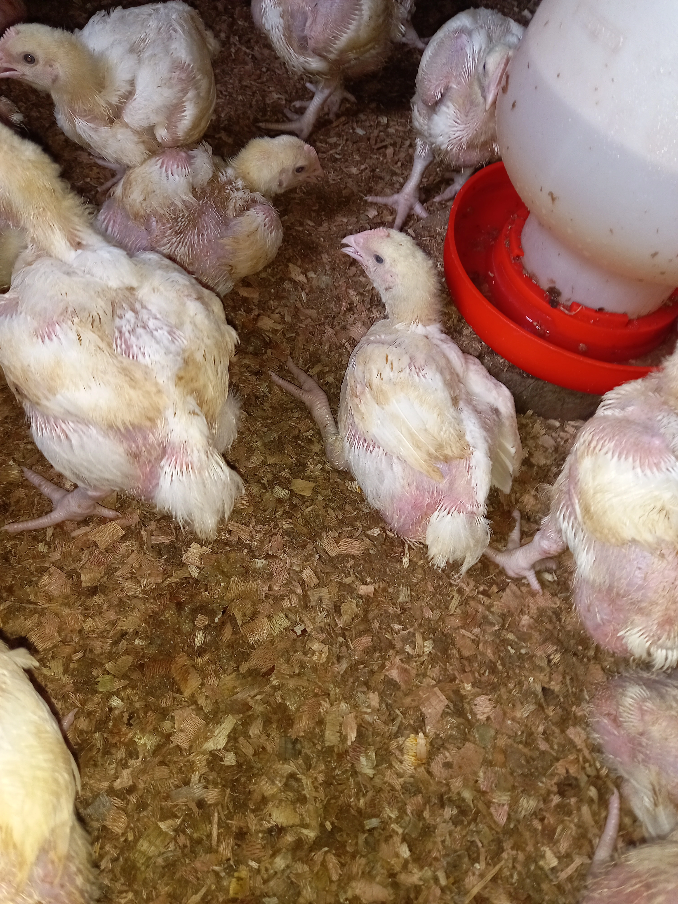

To Start Hatching Your Own Chiks Here's What You Need.

Starting a chicken farming business can be a profitable venture, but it requires careful planning and investment. One key component of chicken farming is the use of an incubator to hatch eggs. In this article, we'll break down the costs and potential earnings of starting a small-scale chicken farming business using an incubator...read more
Practical Guide To Starting A Broiler Business From Scratch

Raising chickens can be a fun and rewarding experience, but it requires careful planning and preparation. Before you order chicks, you need to ensure you have the right equipment to care for them.
Firstly, you will need a chicken coop that is properly ventilated to provide fresh air for the chicks. Chickens need enough air to grow, and they can become ill or even die if they lack it. Also, ensure that the coop is safe from predators such as foxes or snakes....read more